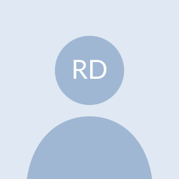

|
Rebecca De Rosa I'm an LLM developer and research assistant at the University of Southern Denmark (SDU) in Sønderborg, where I build LLM-based agents for software security and lead the LLM development of a retrieval-augmented, human-in-the-loop document system. I received my MSc in Cybersecurity from Politecnico di Torino in 2026. I did my Master's thesis at SDU as an exchange student, advised by Adam Alami (SDU), Danilo Giordano and Matteo Boffa (Politecnico di Torino). Before that, I did my BSc in Computer Engineering, also at Politecnico di Torino. |
 |

ResearchI'm interested in how to evaluate, verify and monitor the behaviour of LLM agents, and in building the benchmarks and methods that make their failures measurable. Most of my work so far applies multi-agent LLM systems to vulnerability detection and static analysis. Some projects are highlighted. |

|
The Open-Box Fallacy: Why AI Deployment Needs a Calibrated Verification Regime
P. M. Konrad, T. L. Adam, A. C. H. Merrild, R. Terrenzi, Rebecca De Rosa, T. Tanyel, S. Ayvaz arXiv, 2026 arXiv Argues that the decision to deploy an AI system should rest on scoped, independently checkable verification and on monitoring after deployment, not on mechanistic explanation alone. Proposes a reportable Verification Coverage metric. |

|
A Hybrid Multi-Agent Architecture for Enhancing CodeQL Static Analysis with Large Language Models
Rebecca De Rosa MSc Thesis, Politecnico di Torino & University of Southern Denmark, 2026 A three-agent LangGraph pipeline (Analyzer, Suggestor, Creator) checks CodeQL results, finds gaps in its rules and drafts new CodeQL queries. On 26 real-world Python files from CVEfixes (CWE-78, CWE-79, CWE-89), the Analyzer found the correct vulnerability in far more files than CodeQL alone. GPT-5.2 and GPT-4o-mini were compared under identical settings, with an LLM-as-a-judge protocol for the proposed rules. |

|
Agentic Vulnerability Detection with Industry Partners
Research Assistant, University of Southern Denmark — with Umbraco and Unik Jan–Jun 2026 An AI system in which LLM agents find a vulnerability in source code, explain how it could be exploited and propose a fix. The fix is tested automatically before a person reviews it. Evaluated on a public benchmark and on real open-source and production code, the system uncovered a likely exploitable flaw in an open-source library. The evaluation also showed how public vulnerability labels can mislead benchmark scores. |

|
Retrieval-Augmented, Human-in-the-Loop Document Assistant
LLM Developer, University of Southern Denmark (internal project) Jul 2026–present A RAG pipeline that helps university employees with a document-based process. Scanned documents go through OCR (PaddleOCR) into structured JSON. They are then split into chunks, using a different method for tables and for paragraphs, and stored as embeddings in a vector database. An LLM answers each query from the retrieved passages, and an interface lets users review each answer with its source passages highlighted in the original scan. |
Teaching & More |

|
Teaching Assistant, Web Development, University of Southern Denmark, Jul 2026–present
Bachelor-level course. I lead the exercise sessions, working through PHP and Laravel exercises with students. Private Tutor, Turin, 2020–2024 Physics, mathematics, chemistry and computer science for middle and high school students. |
Skills |
LLMs & agents: LangChain, LangGraph, single- and multi-agent design, closed and open-source models (GPT, Claude, DeepSeek, Qwen), RAG architectures, prompt engineering
ML: PyTorch Security: static analysis (CodeQL), vulnerability detection Programming: Python, Java, C, C++, PHP (Laravel), Linux Languages: Italian (native), English (C1) |
|
Website template adapted from Jon Barron. |